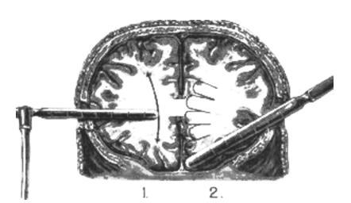

你好，欢迎来到《医学通识50讲》，我是薄世宁。
在你眼里，是不是每年的诺贝尔生理学或医学奖，都代表了医学的伟大进步呢？
那你知道有一年的诺奖发错了吗？
直到今天，这个奖项都被看成是诺奖历史上最大的耻辱。
这就是1949年的诺贝尔奖。颁给了一位医生，他发明了用切除病人的前脑叶来治疗精神病的方法。

前脑叶就是大脑的额叶，额叶负责我们复杂的认知行为。比如记忆、思考、决策、表达等等。用手术破坏额叶，精神病病人的狂躁和幻觉自然也就消失了，病人也就不闹了。
但是，一个没有情感、没有判断、没有思维、只有呼吸的人，还能算一个真正的人吗？
有人这么描述这个手术：
电影《飞越疯人院》的男主角，就是被强迫做了这种手术。从此，一个活跃的勇士变成了一具行尸走肉。
那么这种血腥残酷的手术怎么能获奖呢？
评奖的人当然都不傻。
这个手术之所以在当时被错误地颁了奖，是因为在它以前，医学对于精神疾病的研究进展几乎是0。任何一点有可能的希望都让大家振奋，即使是一种今天看起来惨无人道的外科手术。
精神病：最后的黑暗之地
广义的精神病包括精神分裂症、抑郁症、情感障碍等很多种，狭义的精神病专指精神分裂症。这类病人可能出现幻觉、妄想、行为和情感异常。
这节课提到的精神病，指的就是狭义的精神病，也就是精神分裂症。
根据推测，历史上很多名人都有过精神障碍。比如梵高、莫泊桑、果戈理，以及1994年诺贝尔经济学奖得主纳什。
在以前，人们对于精神病充满了无知，对病人蔑视、反感、厌恶，甚至残害。
远古时代，人们以为精神病是鬼进入了人体。所以，就给这些病人脑袋上打洞，以为这样可以让“恶魔出逃”。
到了20世纪30年代，有的医生给精神病的病人注射胰岛素，让他们低血糖、昏迷，用这样的办法来治疗病人的躁狂、幻想。
再后来的治疗办法，就是咱们刚才说的，能让病人变成行尸走肉的外科手术。
别看这种手术残忍，这在当时可是有钱人才能做的手术。没钱的人就只能被关在疯人院，给他们戴上手铐脚镣，或者捆起来。最“人道”的方法，是把病人关在阴暗、狭小、肮脏的地下室里，让他自生自灭。
这就是当时精神病病人真实的生存状况。
人们只看到了病人攻击、逃避、躁狂、抑郁、自残，甚至自杀的外在行为，但是他们的内心却是错乱、颠倒、虚幻和恐怖的黑白世界，没人能了解。
直到一个药的出现，精神病病人的生存状况才发生了改变。这就是氯丙嗪。
氯丙嗪：意外所得的治疗革命
这个药你可能很陌生，听起来好像没有青霉素、疫苗、DNA这些发明如雷贯耳。
但是，《英国医学杂志》（The BMJ）却把这个药评为1840年以来，医学领域的15个重大进展之一。
在我看来，氯丙嗪的发明可以和青霉素相媲美。
因为，它打开了精神病病人身体和心灵的双重枷锁，让医学的光芒照亮他们的世界。氯丙嗪是医学发展重要的里程碑之一。
下面我们看看它是怎么诞生的。
战争的时候很多伤员会失血，甚至休克。
1949年，法国的一位军医亨利·拉伯里特（Henri Laborit）一直都想找一种抗休克的好药。
他找到了一种药，但是这个药抗休克的效果并不好。
受了重伤的人会焦躁不安，拉伯里特给他们用了药以后，发现这些人居然都安静下来了。他想，这个药是不是可以改变人的精神状态呢？
拉伯里特立刻把这个发现发表了出来。放到今天，这样的文章可能直接就被编辑扔了。因为他只写了观察到的现象，全文连靠谱的数据都没有。
但是在当时，还真的有制药公司相信了。这个公司加紧研发，很快就在拉伯里特用的药基础上，改良出一种新药。毒性更小，作用更强，这就是氯丙嗪。
1952年，医生把这个药用在一个躁狂症的病人身上，这个病人的症状很快就消失了。吃了一段时间后，他的行为甚至接近正常人了。
又过了1年，氯丙嗪在法国上市。1954年，氯丙嗪在美国上市。10年后，全世界有大约5000万的精神病病人用上了氯丙嗪治疗。
大量病人的症状得到了缓解，其中很多病人甚至可以恢复社会功能，自力更生。得了精神病的人不一定非得住院，很多人在家吃药就能控制症状。
这在全世界，掀起了一场精神病病人的“非住院化运动”。
就拿美国来说。1955年住院的精神病病人是55.9万人，10年后降低到了45.2万人。住院人数减少了近20%，有的精神病医院甚至由于缺少病人而关门了。
精神病药物的治疗革命
在氯丙嗪出现前，人们认为疯了就是疯了，就是废人了。
有了氯丙嗪，近75%的急性患者可以重新融入社会，参加工作，正常生活。慢性患者也有相当一部分的病情得到了控制。
氯丙嗪开启了药物治疗精神疾病，让病人恢复社会功能的新时代。
1989年氯氮平问世，1993年利培酮问世。这两个药代表着抗精神病药物进入第二代。到了2002年，人类又开发出第三代抗精神病用药阿立哌唑。
在我看来，氯丙嗪带来的进步和意义，已经不仅是个药，不仅是一种治疗精神病的物质载体了。它给医学带来了三个进步：
第一个进步是，氯丙嗪的出现，赶走了所有不科学的解释。
很久以前，人们把精神病的病人看成是魔鬼附体。
到了公元前400-500年间，希波克拉底把病人从神鬼的桎梏中解救出来。希波克拉底认为这些病人身体里没有鬼，是人自身出了问题。
再后来，人们把精神病归因于道德，这又给这种病打上了一个“羞耻”的烙印。
笛卡尔的二元论则认为，精神是独立于物质存在的。
这些误解都源自于人们不了解精神病的发病机制。很多病，医学可以通过客观的检查找到明确证据。
比如，冠心病可以做心电图，做造影，做冠脉CT，那么精神病病人的幻觉拿什么来精确检测呢？
咱们只知道是大脑出了问题，但是病人外表看不出任何异常，即便去世后尸体解剖也找不到异常部位。所以，关于精神疾病就充斥着各种不科学的解释。
直到抗精神病药物的出现，病人只要吃上药，很多症状就可以得到缓解。所有疾病一定有物质基础，找不到不代表没有。这一理论再次得到夯实。
所有不科学的解释不攻自破。不需多说，也不需要辩论，事实胜于一切雄辩。
第二个进步是，氯丙嗪的出现，拓展了医学的治疗思路。
有些病，咱们只要了解确切的机制，了解病因和疾病的因果关系，就可以治疗。
比如，有些肺炎可能是因为某种细菌感染导致的。那么找到了细菌，就可以用青霉素治。青霉素干扰细菌细胞壁的合成，让细菌死亡，然后依靠人体免疫细胞自我修复，治愈疾病。
但是到目前为止，更多的病找不到确切的因果关系和发病机制，这些病怎么治呢？
比如高血压、糖尿病，比如咱们今天讲到的精神病。难道必须等到搞清楚因果关系的源头，才能开始治病吗？
1972年，也就是氯丙嗪上市19年的时候，医生发现氯丙嗪的作用和大脑内的多巴胺受体相关。氯丙嗪阻断多巴胺受体，对大脑内的神经递质进行干预，就可以减轻精神错乱。
也就是说，我们可能短期内没办法精确了解因果，但只要能找到发病的某个因果链条，阻断链条，同样可以治病。
从干预因果，到干预因果链条，这是医学治疗思路的拓展。
1957年，人类研发出第一个抗抑郁药。
《2014年全球精神疾病药物研发报告》称，目前全球生物制药公司在研的精神疾病药物共有119种。其中，精神分裂症药物36个、抑郁症药物29个、注意力缺陷障碍和多动症药物15个、抗焦虑药物15个、自闭症药物6个。
这些药的原理，都是作用于发病中的某个因果链条，或者某种递质。
2019年3月，美国FDA审批通过新型抗抑郁药右旋氯胺酮，它的作用原理还是针对某个因果链条，作用于某种递质。
也就是说，虽然迄今为止，很多病的确切发病机制我们还没办法彻底搞清楚。
但是为了让病人的病能治，为了让病人好好地活着，那么只要了解了其中的某个关键环节，同样可以起到很好的疗效。
这何尝不是一种伟大的进步呢？
第三个进步是，氯丙嗪的出现，让医学的人道主义照亮最后一片黑暗之地。
在氯丙嗪之前，医学几乎在各个领域都有了长足的进步。但是，精神疾病依然是荒芜一片。
想象一下，在这个医学没有取得突破的领域，那些被关进疯人院，或者走失在人间的精神病患者，他们被看成贱民、恶魔，过着悲惨的生活。
医学的光辉从来没有照亮到这片庞大的、黑暗的区域。
很多人对于这类病人充满了蔑视，有些人甚至去恶意攻击他们。
也许，我们在街上偶尔遇到走失的严重精神障碍的病人，他们满身污秽，在街边翻垃圾找东西吃。
会不会有人告诉自己的孩子，这是疯子，离他远点呢？
可是，他们是病人，他们没有道德问题。也许有一天，我们周围可能就有至亲的朋友或者亲人会发病。
氯丙嗪，第一次让医学的曙光几乎照亮了疾病黑暗世界的每一个角落。从此，很多精神病的病人可以像正常人一样活着。
医学，让人文更人文。
下节预告
医学上为什么不用心跳停止作为死亡的标准呢？下一讲，我们讲讲重新定义的生命终点——脑死亡。